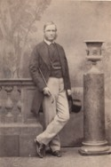
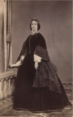

Beaubien-Perrault-Benington - Family Card
Beaubien-Perrault-Benington - Family Card
Rt. Hon. Sir Allan Napier Macnab(2 Feb 1798 - 8 Aug 1862)
Mary Stuart(30 Mar 1812 - 8 May 1846)
m. 15 Nov 1855, Hamilton, ON

b. 15 Apr 1832, London, England
d. 28 Aug 1894
br.
occ.
edu.
rel.
Flags.

b. 5 Jul 1832, Hamilton, ON
d. 5 Apr 1917
br.
occ.
edu.
rel.
Flags.
Children
Hon. George Keppel(14 Oct 1865 - 22 Nov 1947)